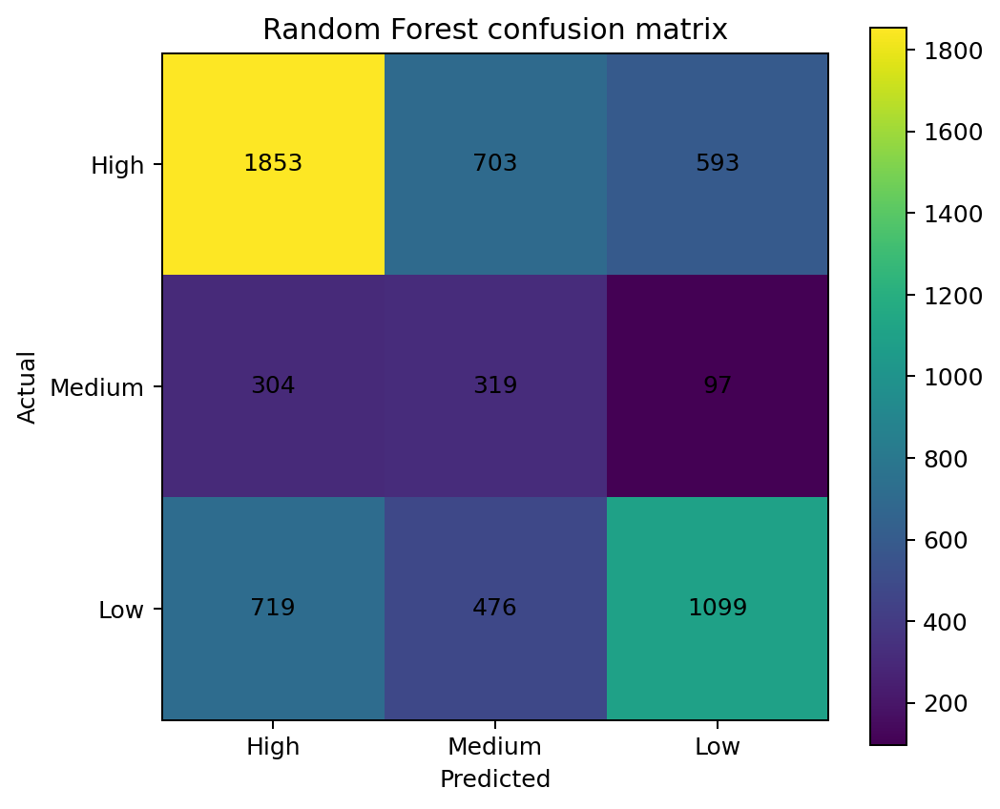
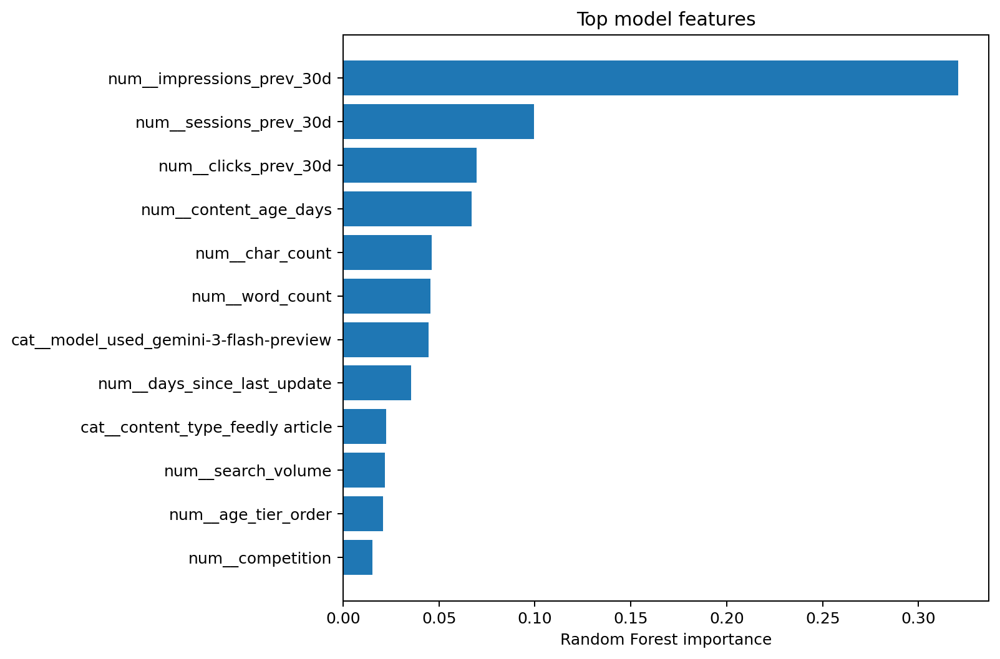
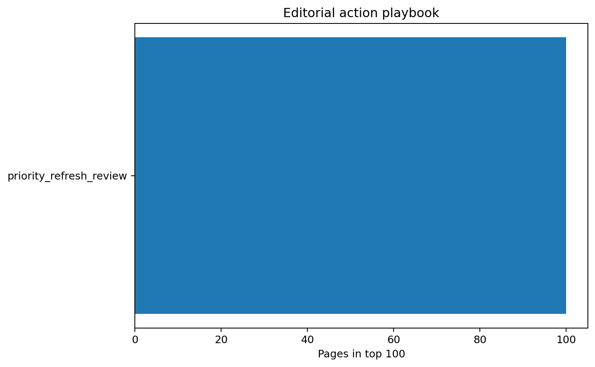

FlyRank Machine Learning Internship Capstone
This capstone asks which content pages should be prioritized for review so editors can focus on pages with the highest measured potential for improvement.
Using the supplied FlyRank 30,000-record Search Intelligence dataset, the workflow audits the data, defines a three-level refresh-priority label from observed trend information, and trains a Random Forest using structural, content, and market attributes that are excluded from target construction.
The model is evaluated on a client-grouped holdout containing 7 unseen clients, with preprocessing fitted only on training data and target-generating performance variables excluded from the feature set.
The leakage-audited Random Forest achieved 53.07% accuracy and 50.35% balanced accuracy, compared with 51.10% and 33.33% for the majority baseline.
The resulting ranking is directional editorial decision support: high-scoring pages should be reviewed first, verified by editors, and evaluated separately if a refresh intervention is later performed.
This project supports editorial prioritization by ranking pages for human review. It is decision support, not an autonomous publishing system.
The supplied FlyRank Search Intelligence dataset contains 30,000 records and 44 columns. No client names, domains, private queries, credentials, or raw exports are published.
Validation: 20% client-grouped holdout, seed 42.
Model: Random Forest with training-fitted preprocessing.
Leakage control: target-generating performance variables excluded from model inputs.
| Method | Accuracy | Balanced Accuracy | Macro F1 | Weighted F1 |
|---|---|---|---|---|
| Random Forest | 0.530748 | 0.503524 | 0.480360 | 0.548271 |
| Majority baseline | 0.510952 | 0.333333 | 0.225444 | 0.345573 |
Random Forest accuracy: 53.07%.
Balanced accuracy: 50.35%.

| feature | importance |
|---|---|
| num__impressions_prev_30d | 0.32058 |
| num__sessions_prev_30d | 0.09941 |
| num__clicks_prev_30d | 0.06957 |
| num__content_age_days | 0.06704 |
| num__char_count | 0.04603 |
| num__word_count | 0.04565 |
| cat__model_used_gemini-3-flash-preview | 0.04463 |
| num__days_since_last_update | 0.03531 |
| cat__content_type_feedly article | 0.02256 |
| num__search_volume | 0.02181 |
| num__age_tier_order | 0.02066 |
| num__competition | 0.01539 |

| action | pages |
|---|---|
| priority_refresh_review | 100 |

Built on the FlyRank ML Internship dataset.
https://flyrank.ai